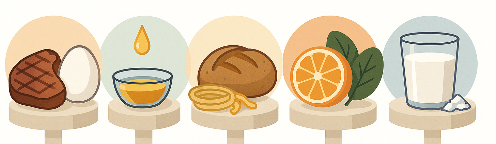
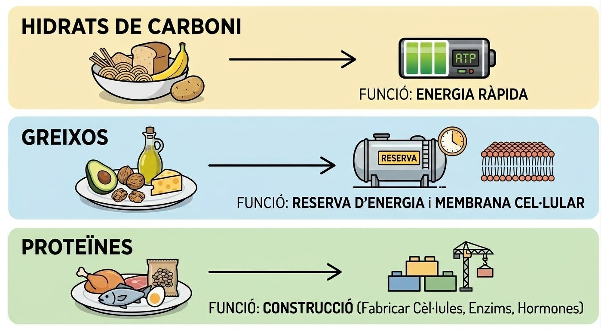
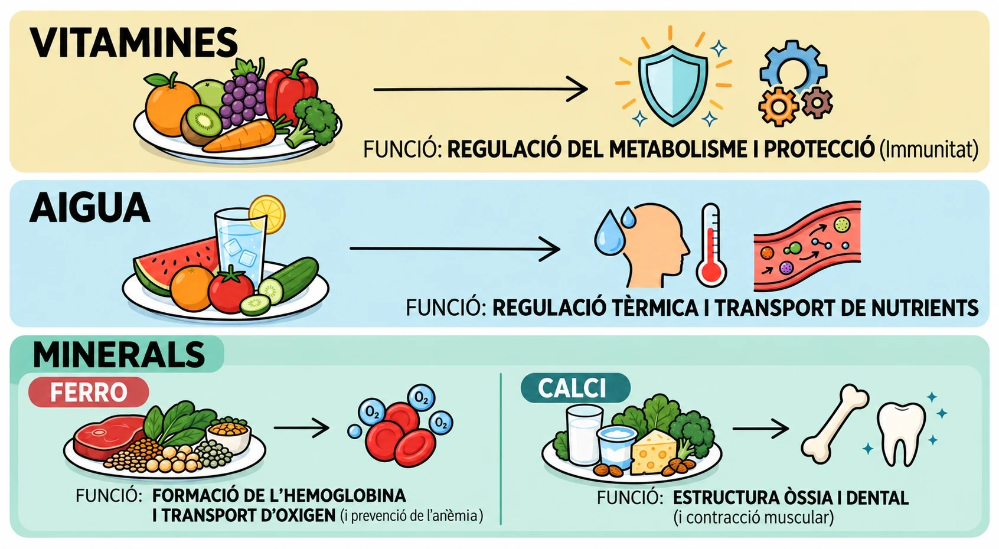

Altres paraules: aliment = الغذاء، الطعام · energia = الطاقة · etiqueta = الملصق
Un aliment és el que menges: pa, ou, poma, arròs. Un nutrient és una substància molt petita que hi ha dins de l'aliment. Un aliment té molts nutrients diferents.
🔮 2 · Predicció. Què creus que té sobretot cada aliment? Encercla una opció.
Al laboratori comprovaràs si ho has encertat.
hi ha midó
no hi ha midó
Prova del iode. Poses una gota de lugol (iode) sobre l'aliment. Si es torna molt fosc, gairebé negre, hi ha midó. Si es queda de color marró-taronja, no n'hi ha.
hi ha greix
no hi ha greix
Prova del paper. Frega l'aliment sobre un paper. Mira el paper a contrallum. Si hi ha una taca que deixa passar la llum (translúcida), hi ha greix.
- Fes les dues proves amb cada aliment de la taula.أجرِ الاختبارين على كل غذاء في الجدول.
- Escriu el color que veus i si hi ha taca. Pots dibuixar un punt de color.اكتب اللون الذي تراه، واكتب إن كانت هناك بقعة أم لا. يمكنك أيضًا أن ترسم نقطة باللون.
- A l'última columna escriu el nutrient. La primera fila (patata) és un exemple.اكتب nutrient في العمود الأخير. السطر الأول (البطاطا) مثال.
| Aliment الغذاء | Iode: quin color veig? iode: أيّ لون؟ | Paper: hi ha taca? الورق: هل توجد بقعة؟ | Nutrient principal nutrient الرئيسي |
|---|---|---|---|
| Patata crua بطاطا نيّئة | molt fosc, gairebé negre ✔ | no hi ha taca ✘ | hidrats (midó) |
| Pa de motlle خبز التوست | |||
| Ametlles اللوز | |||
| Clara d'ou بياض البيض | |||
| Poma التفاح |
La clara d'ou no té midó ni greix: el que té sobretot és proteïna (ho diu la seva etiqueta). بياض البيض فيه proteïnes في الغالب.
Quan poso iode al pa, el pa es torna .
Per què canvia de color? Què hi ha dins del pa?
He llegit que el iode es torna molt fosc quan hi ha .
Per tant, el pa té , que és un .
Torna a la secció 0 (predicció). Has encertat amb l'ametlla? sí no
Ho sé perquè a la meva taula, l'ametlla .
El cos desfà els aliments en nutrients petits. Els hidrats es converteixen en glucosa. La cèl·lula crema la glucosa dins el mitocondri i obté energia. Sense menjar, la cèl·lula no té energia.

carn, ou
proteïnes: اللحم، البيض
oli
greixos: الزيت
pa, pasta
hidrats: الخبز، المعكرونة
fruita, verdura
vitamines: الفواكه، الخضار
aigua, llet, sal
الماء و minerals
Els hidrats donen energia de pressa: la fas servir ara. Els greixos donen energia guardada, per a més tard, i formen la pell de la cèl·lula (membrana). Les proteïnes serveixen per construir i reparar el cos: músculs, pell, cabells.
Completa la taula. A la columna Funció copia una frase del banc (una no serveix). A la columna Aliment escriu un aliment de la teva taula del laboratori.
| Nutrient | Funció (del banc) الوظيفة | Aliment del laboratori غذاء من المختبر |
|---|---|---|
| Hidrats de carboni | ||
| Greixos | ||
| Proteïnes |
«El té sobretot , i serveix per a .»
Digues-ho en català. El company/a marca ✔ si la frase té sentit:
Els aliments tenen nutrients. Els hidrats donen glucosa. La cèl·lula crema la glucosa al mitocondri i obté energia.
Avui mirem l'etiqueta d'un paquet de galetes de xocolata. L'etiqueta diu quants grams de cada nutrient hi ha en 100 g d'aliment. El nutrient amb el número més gran és el que hi ha més. La línia «dels quals…» és una part de la línia de sobre: no la sumis.
Un aliment ultraprocessat té molts ingredients (més de 5) i coses que no tens a la cuina de casa, com E-322 o aromes.
Informació nutricional per 100 g
| Valor energètic | 520 kcal |
| Greixos | 29 g |
| dels quals saturats | 12 g |
| Hidrats de carboni | 57 g |
| dels quals sucres | 49 g |
| Proteïnes | 6,3 g |
| Sal | 0,3 g |
farina de blat, sucre, greix de palma, xocolata, cacau en pols, xarop de glucosa, llet en pols, midó de blat de moro, ou en pols, sal, gasificant (E-500), emulsionant (E-322), colorant (E-150), aroma de vainilla.
- Copia de l'etiqueta els grams d'hidrats, greixos i proteïnes.انسخ من الملصق غرامات hidrats و greixos و proteïnes.
- Compta els ingredients. Encercla al text els que no tens a casa.عُدّ المكوّنات. ضع دائرة حول الأشياء التي ليست في بيتك.
| Hidrats de carboni | g |
| Greixos | g |
| Proteïnes | g |
| Nombre d'ingredients عدد المكوّنات |
A les galetes (البسكويت) hi ha més hidrats greixos proteïnes, perquè el número més gran és g.
Les galetes són no són ultraprocessades, perquè tenen ingredients i porten .
Abans de córrer, la Mercè vol energia ràpida. Què li va millor: un plat de pasta o un grapat d'ametlles?
Li va millor això perquè té sobretot , que donen energia .
Els aliments tenen nutrients. Els hidrats donen glucosa. La cèl·lula crema la glucosa al mitocondri i obté energia.
📖 Llegeix la lectura de la Sessió 2. A l'inici de la propera sessió faràs el formulari de comprensió (Google Forms).
Fes una foto de l'etiqueta de 2 productes que menges a casa. Porta-les a la propera classe i omple la taula.
| Producte المنتج | Nutrient que hi ha més nutrient الأكثر | Ultraprocessat? Per què? |
|---|---|---|
Com estudiar-ho, cada dia 10 minuts: ① llegeix una targeta en català · ② mira les imatges i les Paraules d'avui · ③ tapa-la i explica-la en veu alta en català · ④ al final del full, marca ✔ quan ho sàpigues.
Totes les cèl·lules fan aquesta reacció dins el mitocondri. La glucosa ve del menjar i l'oxigen, de l'aire que respires. La cèl·lula en treu energia (ATP) i expulsa CO₂ i aigua. Tota aquesta unitat (digestió, respiració, sang) explica com arriben la glucosa i l'oxigen al mitocondri.

Pa, pasta, arròs, patata, fruita. El cos els converteix en glucosa, que va al mitocondri: energia ràpida. Sense hidrats, no hi ha energia ràpida.
Oli, fruits secs, formatge. Donen el doble d'energia per gram, però més a poc a poc: energia de reserva. També formen la membrana de la cèl·lula.
Carn, peix, ou, llegums. El cos les trenca en aminoàcids i en fa cèl·lules noves, enzims i hormones: serveixen per construir i reparar.

Vitamines (fruita, verdura): fan que el cos funcioni bé i ens protegeixen de malalties.
Aigua: regula la temperatura del cos (suor) i porta els nutrients per la sang.
Minerals: el calci fa ossos i dents; el ferro fa l'hemoglobina de la sang.
L'hemoglobina és la proteïna dels glòbuls vermells que porta l'oxigen. Per fer-la cal ferro. Si falta ferro, arriba menys oxigen als músculs i et canses aviat. Potser li passa això a la Mercè? Ho veurem a l'anàlisi de sang.
es torna fosc ✔
no canvia ✘
El iode només detecta el midó. La poma té un altre hidrat, un sucre (la fructosa), i el iode no es torna fosc. És un fals negatiu: el test diu «no», però sí que hi ha hidrats.